Base de datos y Manejador de base de datos SqlServer o Mysql
1.- Creacion del proyecto
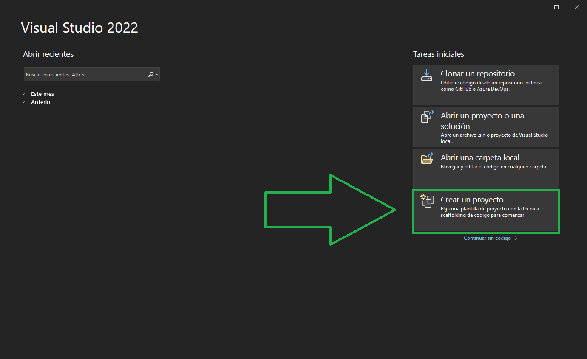
IMG 1 : Al iniciar la aplicacion veremos multiples opciones , Si cuentas con visual studio 2019 o 2022 las aplicaciones son similares en esta parte ,Unicamente seleccionamos crear un proyecto y pasaremos a la siguiente pantalla.
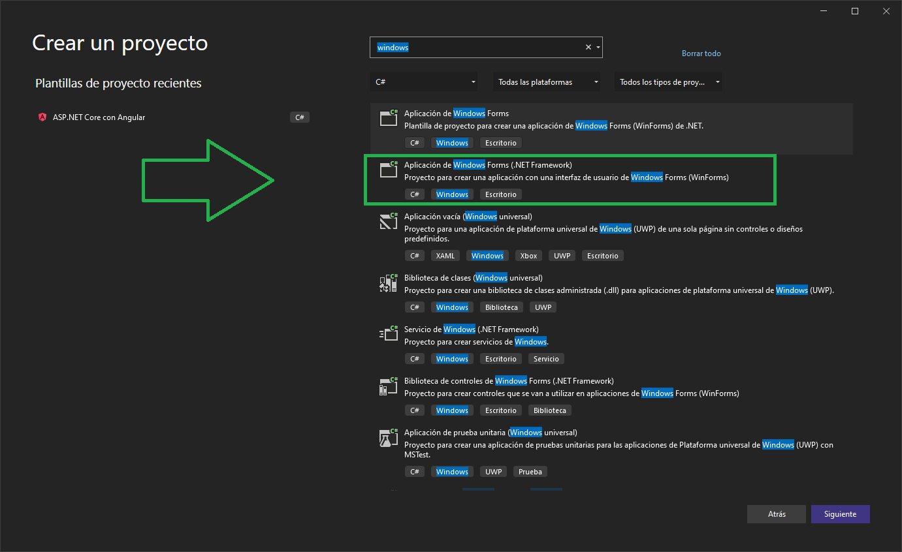
IMG 2 : Ahora visual studio nos mostrara multiples frameworks para la creacion de proyectos , por esta ocasion seleccionaremos un proyecto de escritorio con windows forms (.Net Framework).
Cuidado con seleccionar un framework bajo VB Net tenemos que seleccionar C#.
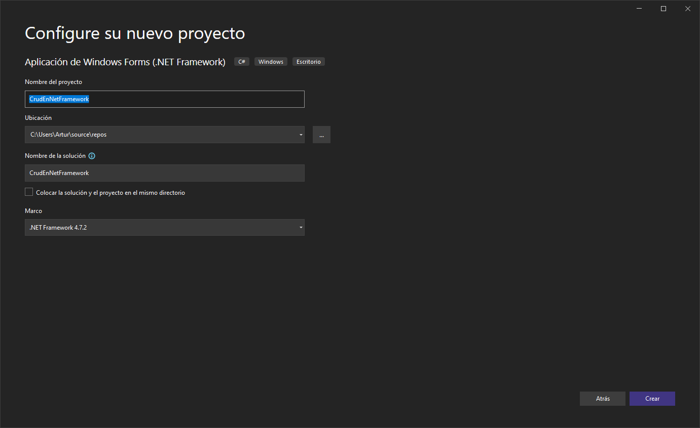
IMG 3 : por ultimo nombramos el proyecto y seleccionamos crear.
2.- Diseno
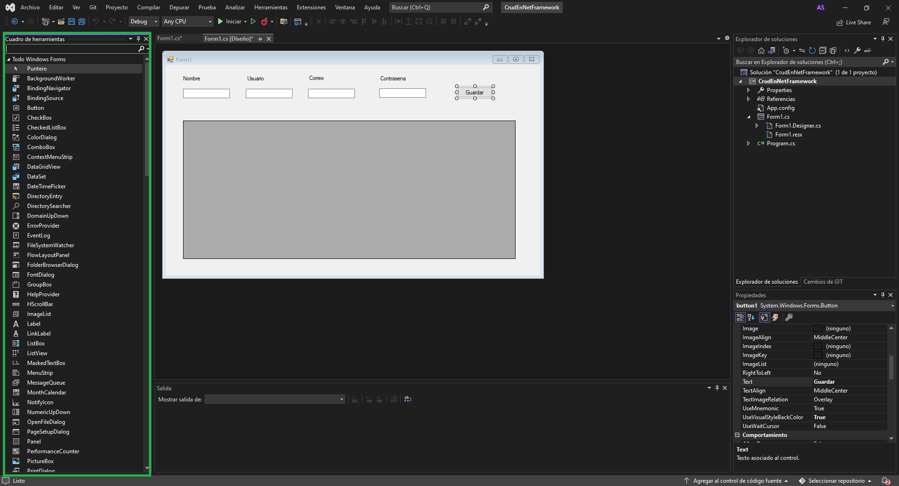
IMG 4 : Ahora nos toca la parte de diseno , si alguna vez as trabajado con windows forms entonces para ti sera facil agregar un data grid view , 4 textbox , 4 labels y un boton.En caso de no ser asi puede que tardes un poco mas pero en el panel izquierdo(cuadro de herramientas) podras encontrarlos y arrastrarlos a el Form1.
3.- Base De Datos (SQL server)
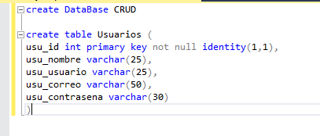
IMG 5 : Creamos una base de datos con el nombre CRUD y despues creamos una tabla como se muesttra en la imagen . Vamos a necesitar configurar / crear el rol de los usuarias
si aun no lo as aecho a continuacion te comparto un video de como hacerlo.
Empezaremos creando en el explorador de soluciones una carpeta llamada Models y dentro de esa carpeta agregaremos una clase con el nombre usuario . El modelo consta de 5 variables definidas con su forma de encapsulacion.
A continuacion muestro como se vera el administrados de soluciones :
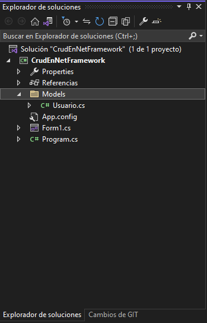
El codigo programado en la clase usuario :
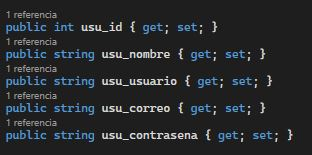
Conexion a Base de Datos
En este tutorial te mostrare dos formas de hacer la conexion a una base de datos . Tu puedes usar la forma que mas te guste ya que esta es unicamente una practica basica.
Entity Framework
Sql Conection
Crearemos una nueva clase DataBaseSQLContext y ocuparemos las siguientes librerias DataBaseSQLContext,SqlConnectionStringBuilder,SqlConnection. dentro de nuestra nueva clase construiremos nuestra primer instancia de (SqlConnectionStringBuilder), a traves de la instancia llenamos las siguientes propiedase DataSource,InitialCatalog,UserID,Password.Luego crearemos una variable de tipo SqlConnection (unicamente con el get publico para que podamos acceder a el en una instancia de la clase).
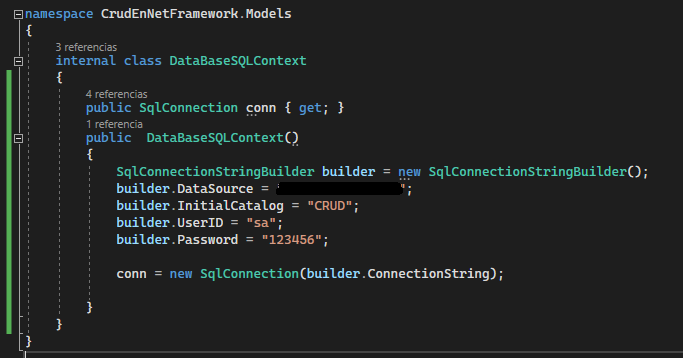
este metodo aun no termina aqui . la segunda parte de la implementacion la encontraremos en el siguiente punto (Metodos/Funciones CRUD)
Metodos/Funciones CRUD
Sql Connection
vamos a agregar una instancia de forma global en la clase ,se agrega de forma global porque las crearmos en diferentes metodos.
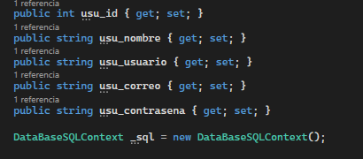
Esta es la segunda parte del metodo de sql connection , ahora vamos a abrir la conexion de la instancia global luego en la siguiente linea pasaremos tanto comando como coneccion y finalmente leeremos llamando a un sqlreader.
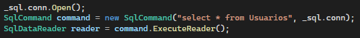
Ahora mostramos una ejemplo de cada funcion Crud
Crear
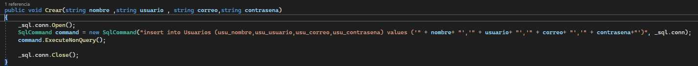
Leer
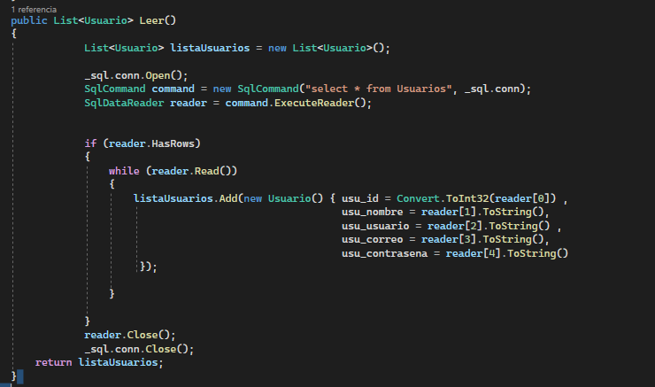
Actualizar
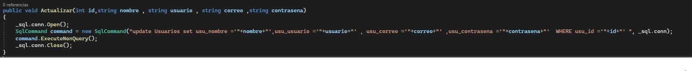
Eliminar
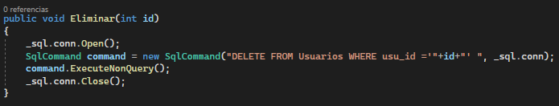
Codigo del Form
ya que tenemos el 80% porciento del desarrollo unicamente tenemos que hacer el llamado del objeto y asu vez de cada funcion creada a travez del codigo del form . para acceder a este unicamente hay que dar doble click a el form1 en la pestana diseno o en el explorador de soluciones > Form1 > click deracho > ver codigo .
La primera funcion es la mas sencilla que es la de leer /lectura Nota (en un ambito profecional no se usaria esta nomenclatura , seria mas adecuado algo como GetUsers ). La primera parte es la instancia del objeto ,despues llamamos a la funcion Leer y la asignamos a la variable var para despues asignarlas al data grid view
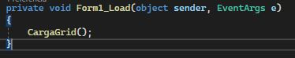
OJO! esta funcion se ejecuta automaticamente cuando se inicia el form , se puede crear manual o automaticamente para darle un nombre mas apropiado como UsersFormLoad(UpperCamelCase). En esta ocasion vamos a dejar el nombre automatico . Como se crea ? R= al dar click automaticamente en el form 1
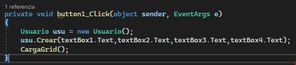
Al igual que en el metodo anterior generamos esta funcion automaticamente al dar click en el button del form1 . agregamos una instancia de usuario al metodo y luego llamamos a la funcion crear a traves de la instancia y finalizamos llamando carga grid para ver el nuevo registro en el data grid .
Para las otras funciones(Editar , Actualizar , ELiminar ) Vamos a hacer algunas modificaciones en el data grid
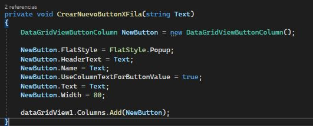
Vamos a crear un metodo unicamente para crear botones dentro del DataGridView . Es aqui donde los invito a que cada que usen un objeto nuevo como DataGridView tomen un tiempo para estudiar su documentacion oficial y experimenten con las funciones . En resumen esta es una funcion que nos ayudara a crear los botones en cada fila y los colocara una nueva columna.DataGridView
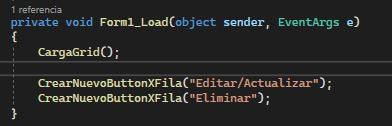
Vamos a agregar dos llamados a el metodo creado anteriormente para crear dos botones actualizar y eliminar.
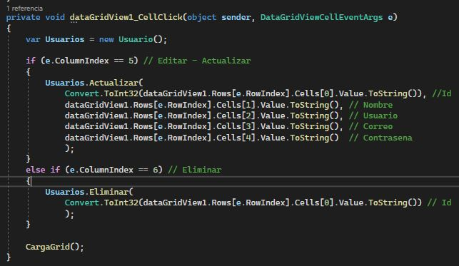
Por ultimo vamos a crear automaticamente la funcion que se muestra en la imagen . Unicamente damos click en una de las celdas, Luego tenemos la instancia de usuarios(Esta tambien se puede hacer de forma global para no tener que instanciarla en cada metodo ).
Lugo tenemos una estructura de control (if ,else if) para traernos la columna que fue clickeada(Notemos como los comentario son 100% utiles ya que nos ayuda a entender porque es 5 y porque es 6 (no siempre es necesario comentar cada linea de codigo)).
Finalmente cargamos el grid para ver los cambios automaticamente.
5.- Funcionalidad
Como podemos ver respetamos completamente el diseno principal de la aplicacion pero esto no quiere decir que no se pueda mejorar .
Leer: La lectura esta implicita al momento de iniciar la aplicacion , es como vemos la informacion en el Grid.
Agregar: Para agregar un registro llenamos los TextBox y damos click en agregar .
Actualizar: Como tenemos habilitada la lectura y escritura en las celdas directamente en el grid podemos editar la informacion en cada columna y guaradamos con el boton actualizar / editar.
Eliminar: Gracias a que posicionamos el boton eliminar en cada fila al momento de elimar agarra el registro endonde se encuentra el booton. NOTA:en un ambito profecional se usa un campo booleano en la base de datos que marcamos como inactivo cuando eliminamos un registro.
Repositorio del proyecto en Git CRUD (Usalo bien no lo descargues y entreges como tu tarea )(La base de datos se vende por separado)